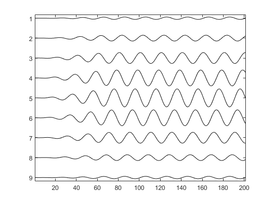

createCWSignals
Generate array of CW signals from amplitude and phase.
Syntax
cw_signal = createCWSignal(t_array, freq, amp, phase) cw_signal = createCWSignal(t_array, freq, amp, phase, ramp_length)
Description
createCWSignals generates a series of continuous wave (CW) signals based on the 1D or 2D input matrices amp and phase, where each signal is given by:
amp(i, j) .* sin(2 .* pi .* freq .* t_array + phase(i, j));To avoid startup transients, a cosine tapered up-ramp is applied to the beginning of the signal. By default, the length of this ramp is four periods of the wave. The up-ramp can be turned off by setting the
ramp_length to 0.
Example:
% define sampling parameters f = 5e6; T = 1/f; Fs = 100e6; dt = 1/Fs; t_array = 0:dt:10*T; % define amplitude and phase amp = getWin(9, 'Gaussian'); phase = linspace(0, 2*pi, 9).'; % create signals and plot cw_signal = createCWSignals(t_array, f, amp, phase); stackedPlot(cw_signal);
Inputs
t_array |
1D vector of time points [s] |
freq |
frequency of the CW signal [Hz] |
amp |
1D or 2D matrix of amplitudes [au] |
phase |
1D or 2D matrix of phases [rad] |
Optional Inputs
ramp_length |
length of the up-ramp used to reduce start-up transients in periods (default = 4) |
Outputs
cw_signal |
matrix of CW signals |
See Also
extractAmpPhase, toneBurst